浓雪遮蔽天日
铅黑色的雪层，浓厚无比
在我的灵魂上也投下一块阴影
雪层遮蔽了我的人生。
预告片《三个忧郁的房间》
伟大的作品一定会直面历史的真相，也总能够直击我们的灵魂，纪录片《三个忧郁的房间》就是这样的作品。
芬兰电影悍将韩嘉莎露深入连记者也禁足的车臣战场，瞄准了俄罗斯孤岛军校、车臣首府破房子、战地临时孤儿院，将镜头对准这群被战争和苦难灼伤的孩子。
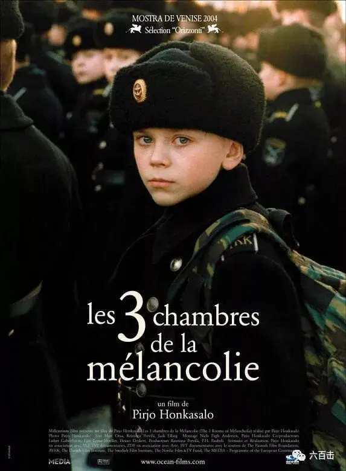
这些小孩背负战争的仇与恨，忧郁深深地刻入到他们天使般的脸庞中，军校十岁小诗人的理想其实不是杀敌，而是做普希金，曾遭俄兵在车臣强暴、十二岁的阿斯朗不认自己是俄罗斯人。
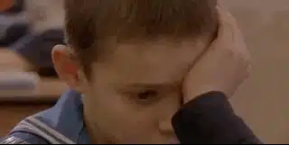
电影时而是凌厉的黑白影像，时而是挽歌般的长镜头，在一片薄雾宠罩下，仿似人类探索看不见的未来，以为美丽却只找着丑恶。
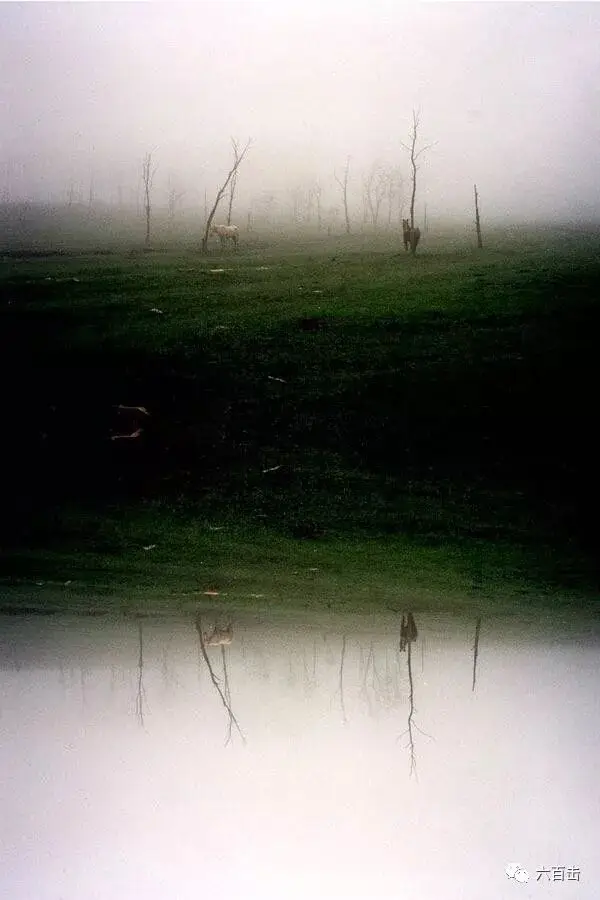
虽为纪录片，但有别于大部分讲解类的作品，电影台词很少，导演通过孩子们的特写长镜头以及诗意的影像来表现沉默背后的忧郁和孤寂，仿佛是塔可夫斯基与安斯罗普洛斯的灵光乍现。
大地发生的一切在圣乐的映衬之下充满了悲悯和远藤周作《沉默》式的拷问，这部电影在威尼斯影展连夺三奖，成为了当年最好的纪录片之一。
一号房间 渴望
第一部分讲述了圣彼得堡的儿童军校，一群十岁左右的孩子在军校的生活看上去井井有条，他们一起跑步、一起练习近距离搏杀以及开枪，这些孩子看上去要比同龄人成熟很多。
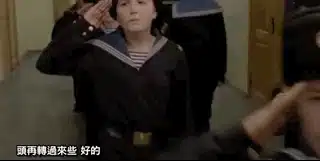
但是这些孩子都有一股天生的忧郁气质，即使导演用特写镜头近距离对准这些孩子，我们都能感受到一种距离感。
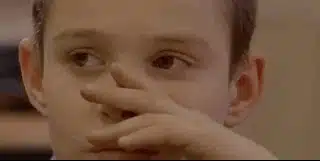
这段距离背后都是留着眼泪的故事：
11岁的科里亚，曾流浪街头，靠捡瓶子养活一个他以为是他妈妈的女人，可他“妈妈”却说，“科里亚是个孤儿”。
科里亚会写诗，他的梦想不是成为一个要和别人厮杀的军人，而是普希金，他在自己的小诗中写到：
我愿做着和普希金一般的梦境
徜徉空中 高声放歌
我渴求 我渴求 我渴求
无时无刻地渴求
面对悲惨，这位敏感坚强的诗人写下这样的诗句：
八月茂密的庄家地里，玉米笔直而孤独地矗立着
美丽，但却空空如也
然而它的声音高昂
汝等疑人，莫埋下头，唯有奴隶才会屈垂着头
我同情你在黑暗中死去
兄弟，再看看我，抬起你的头吧
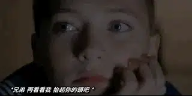
10岁的米萨是圣彼得堡人，他的祖父曾在海军服役他把米萨从父母身旁带走，送来军营。
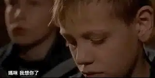
10岁的德米特里，母亲是酒鬼，父亲是雇佣兵，打过阿富汗战争，德米特里的母亲受不了他的父亲而离家出走，父亲自从祖母生病后，就把德米特里送进军校。
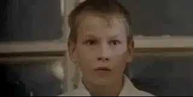
11岁波波夫，双亲都是酒鬼，有次他家起火，他的母亲从阳台跌落而死
波波夫从此露宿街头。
.........
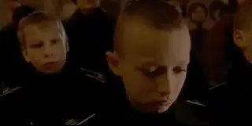
导演的旁白介绍只是寥寥数语，他们的悲伤和孤寂都写在天使般的面庞里和那一双双无比忧郁的眼中。
也许，只有上帝才真正明白这些孩子所经历的苦难。
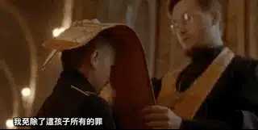
第一部分，导演用「渴望」来表达孩子们隐秘的希望，他们并不渴求充满杀戮的未来，也更无意于每天坐在下面充满仇恨地看着车臣“黑寡妇”的爆炸袭击。
他们只是希望寒假来临，将自己在军校亲手缝做的布娃娃送给自己的家人和朋友，而这一切对他们而言，又是那么的遥远和奢侈。
二号房间 呼吸
第二部份讲述车臣首府格罗兹尼经过战火摧残后，儿童们的生活。
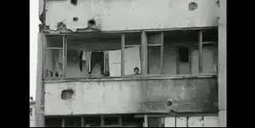
这一部分导演采用的是粗粝的黑白摄影，导演故意采用这样的方式去营造一种悲痛的历史感，用黑白画面，更可以让人无意识地回到记忆中。
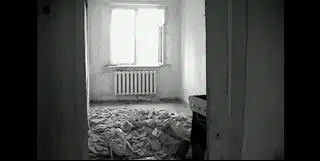
而这段记忆却是一段悲痛到难以呼吸的记忆，城市到处都是废墟，孩子们和武装坦克生活在一起，平时玩的小游戏也是“战争游戏”。
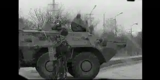
炮火带来贫穷、疾病以及无望的未来，得了重病的妇女无力再抚养三个可爱的孩子，无奈只能将他们托管给孤儿院。
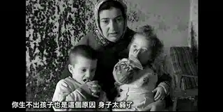
在分别的时候，孩子不舍地放声痛苦，不停地拥抱着自己的母亲，而最小的女孩则不停地用稚嫩的小手喂母亲吃面包。
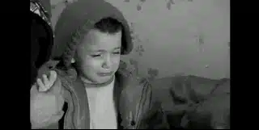
几分钟后，曾经到处充满孩子笑声的房间安静的令人窒息，母亲怅然若失地看着破败的房间，看着孩子用过的水杯，无助地躺在床上失声痛哭.......
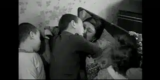
导演用「呼吸」来形容这里的生活，实在是对我们人类最大的讽刺。
三号房间 记忆
第三部分，导演描述的是车臣孤儿院的生活，这部分的台词介绍的更少，镜头也变得越来越长，导演静默地跟着孩子们参加了穆斯林的祭奠。
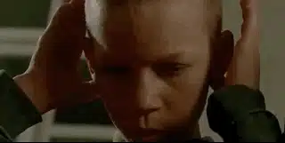
静默地观察着这群孩子在电视里看到“黑寡妇”恐怖袭击时的表情。
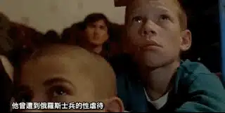
这里的无奈，这里的恐慌，这里的悲伤和仇恨都化作记忆永远地留在了这些孩童的眼中。
实在不忍想象，车臣孤儿院的孩子和圣彼得堡军校里的孩子有朝一日会在战场上相互厮杀，他们都是那么的孤独，都是那么的无助。
这个时候，我想导演再也无法直面这些孩子的苦难，镜头从孩童身上转到了朦胧迷茫的自然风景中，如同塔尔科夫斯基一样，导演用慢慢升起的太阳表达着她的希望和祝福。
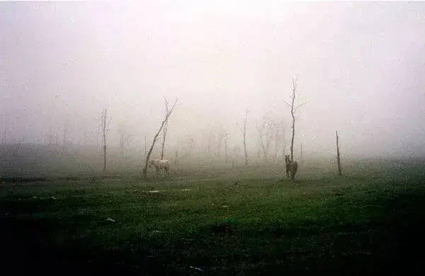
电影最后大人叫孩子起床，这个镜头长达六分钟，在被唤醒的过程中，暗含了希望。
这部关于战争的作品，没有一处战争镜头，却透过战地孩子们忧郁的双眼强烈地控诉了战争的残酷，并将这段历史记忆镌刻在悲悯的镜头中，它是对全人类的提醒和警告。
孩子的仇恨教育不仅仅来自于学校，更是来自于残酷的现实，在圣彼得堡军校孩子的眼中，“黑寡妇”的袭击无疑是恶魔行径，而在车臣孩子的眼中，“黑寡妇”也许正是某个孩子勇敢的母亲。
电影的结构很有意思，两边是战争双方受害的孩子，中间是那段残酷的战争记忆。
电影仿佛一个画轴一样，将整个战争图景慢慢展开，我们会发现人类彼此的偏见和仇恨有多深，而卷入其中的孩子和妇女始终是战争的牺牲品。
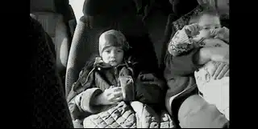
对于历史，这样的态度才值得我们尊敬和学习，可悲的是，我们的历史教育不仅仅充斥着别有用心的仇恨教育，更可怕的是，我们竟敢扭曲和遗忘历史，刻意美化历史错误和苦难。
无法直面和反思那些历史灾难，苦难和悲伤的双眼还会远么？

关注并回复：三个忧郁的房间
获取电影资源
相关推荐：
100双绝望的眼睛
《芳华》| 他那么好却被伤的如此之深
《潜行者》 | 这是全人类绝无仅有的电影了
《乡愁》 | 没有一个人能够将信仰拍的如此诗意和凝重
这里没有挑逗你眼目情欲的小鲜肉
也没有挑动你肉体情欲的段子
更没有膨胀你今生骄傲的鸡血
我们只在乎那些最质朴真诚的作品
在那里我们才能恢复真正的想象力
我们也坚信这才是我们真正需要的

ID:Six_hundred_hits
长按二维码，一键关注
【六百击】
-END-
电影评论
尽情分享朋友圈
苹果打赏通道